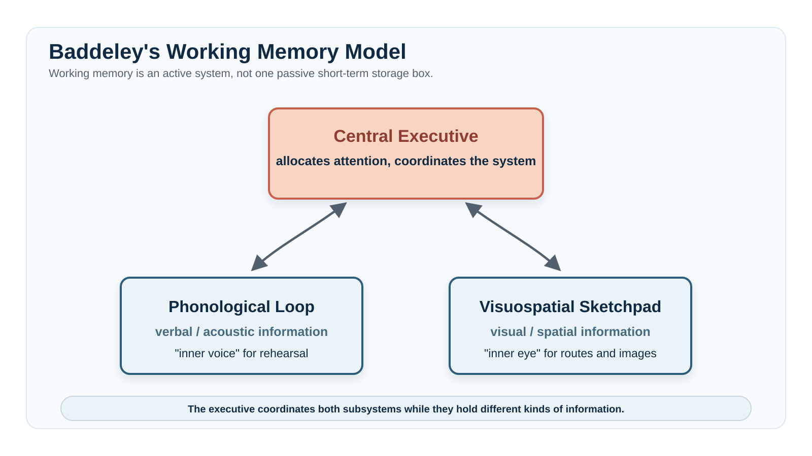
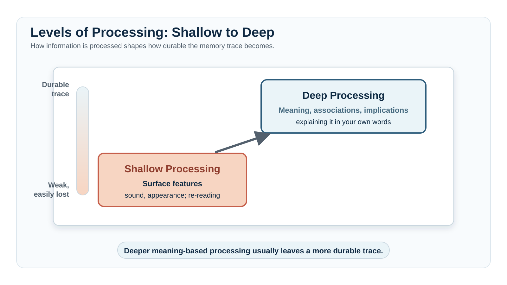
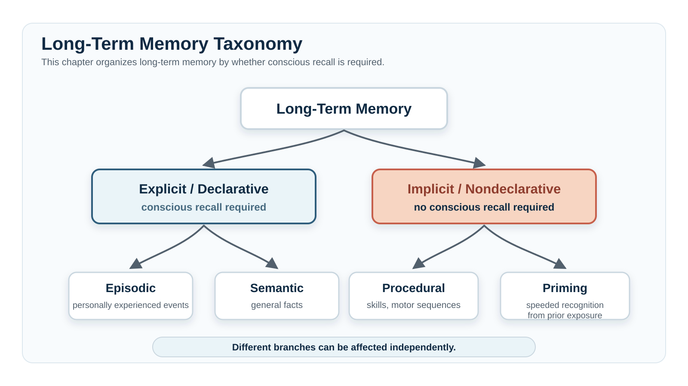
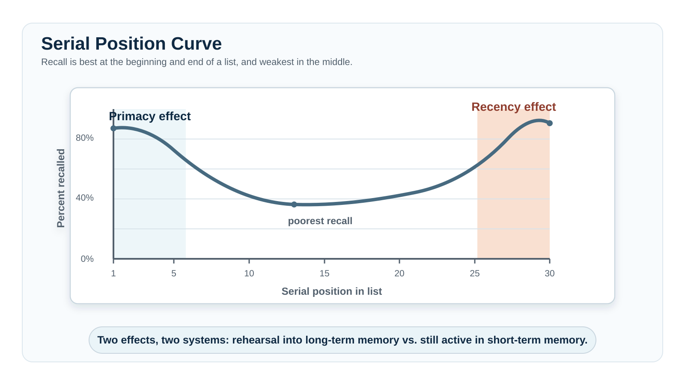
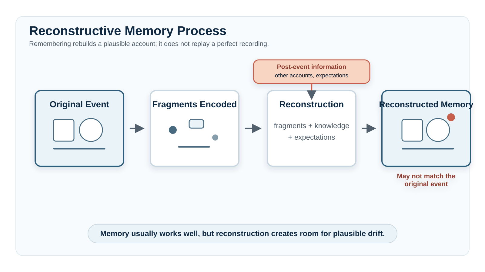

Memory
"Memory works like a video camera — it records what happens to you, and the recording stays accurate unless something damages it."
A nationally representative survey of the U.S. population asked people directly whether they believed this, and 63% agreed that memory works essentially like a video recording (Simons & Chabris, 2011). Another 48% agreed that, once a memory is formed, it doesn't change — it just sits there, intact, until it's retrieved or lost. Both beliefs are tempting for an obvious reason: subjectively, remembering feels like replaying something. You "see" the kitchen from your childhood, you "hear" an old argument, and the experience has enough sensory richness that it's natural to assume you're accessing a stored recording rather than building something new each time.
You are not accessing a recording. Every time you remember something, you are reconstructing it — assembling a plausible account from fragments, general knowledge, and whatever you currently believe should have happened, not retrieving an intact file. This isn't a minor caveat about memory's limits; it's the basic mechanism. The fragments are often accurate, which is why memory works as well as it does most of the time. But the reconstruction process is also exactly why memory can be altered by a leading question, contaminated by a conversation with a co-witness, or — in the most striking cases — can produce confident, detailed memories of events that never happened at all. This chapter spends time on those failure modes not because memory is defective, but because how it fails tells you what it's actually doing the rest of the time: not recording, but rebuilding.
Where This Fits
Why does memory preserve meaning better than detail? That question is this chapter's subject, and answering it reframes forgetting itself: not as a flaw in an otherwise reliable recording system, but as the same compression this book keeps finding everywhere else — a system built to keep what's useful and let go of what isn't. Chapter 7 covered learning — how experience changes future behavior. Memory is the system that makes that possible: without some way of encoding, storing, and retrieving past experience, nothing learned on Monday could affect what happens on Tuesday. This chapter also picks up a thread Chapter 6 deliberately left thin — sleep's role in memory consolidation was anchored there only briefly, with H.M.'s case mentioned and explicitly deferred to this chapter, where it now gets full treatment. Going forward, working memory's limited capacity (Section 1) becomes a recurring constraint in Chapter 9's account of problem-solving and reasoning, and this chapter's account of reconstructive memory sets up Chapter 11's treatment of how groups distort shared recollections.
Learning Objectives
- Distinguish encoding, storage, and retrieval as the three processes memory requires, and explain how a failure at each stage produces a different kind of forgetting (APA IPI Theme 1: psychological science relies on evidence and revises itself as it accumulates).
- Describe the three-stage model of memory (sensory, short-term/working, long-term) and the evidence (Sperling's partial-report procedure, digit-span studies) that originally supported separating sensory memory and short-term memory from each other.
- Differentiate explicit from implicit memory, and episodic from semantic memory, using concrete examples and H.M.'s case as a guide to what each type does and doesn't depend on.
- Explain interference and decay as complementary accounts of forgetting, and describe the evidence — including the Jenkins & Dallenbach sleep findings — that supports interference as a major contributor to everyday forgetting.
- Evaluate why memory is reconstructive rather than reproductive, applying this to the misinformation effect, false memory, confabulation, and source misattribution (APA IPI Theme 5: our perceptions and biases — including memories — can be inaccurate).
- Apply evidence-based encoding and retrieval strategies (levels of processing, elaboration, chunking, spacing, retrieval practice) to your own studying (APA IPI Theme 6: psychological findings can be applied to everyday life).
Section 1: Encoding — Building the Trace
Before you can forget something, you have to actually get it into memory in the first place, and a great deal of what looks like "forgetting" is really a failure that happened at this very first step — information that was never encoded well enough to be available for storage at all. The most influential early account of how information moves into memory, the Atkinson-Shiffrin three-box model, proposed exactly three stages (Atkinson & Shiffrin, 1968):
- Sensory memory — a brief, high-capacity store holding a rapidly decaying sensory trace of incoming information for a fraction of a second
- Short-term memory (STM) — a limited-capacity store holding a small amount of information for roughly seconds to a minute unless something is done to keep it active
- Long-term memory (LTM) — effectively unlimited in capacity and duration; where information ends up if it survives the earlier stages
The three-box metaphor is a simplification — modern memory research treats these less as discrete physical "boxes" and more as functionally distinct processes — but it remains a genuinely useful map of where memory can succeed or fail, and this chapter is organized around exactly that map: encoding (this section), storage (Section 2), and retrieval, including how retrieval goes wrong (Sections 3 and 4).
![A three-panel flow diagram shows information moving from Sensory Memory, with high capacity and a duration under one second, to Short-Term/Working Memory, with about seven plus or minus two items and a duration of seconds to about one minute, to Long-Term Memory, with effectively unlimited capacity and a lifetime duration. Arrows labeled Attention and Encoding connect the panels moving forward; a thinner return arrow labeled Retrieval moves from Long-Term Memory back to Short-Term/Working Memory. Small downward arrows beneath each panel indicate information can be lost at every stage.](../images/ch08/ch08_atkinson_shiffrin_three_box_model.svg)
Sensory memory holds the raw sensory impression of a stimulus for an extremely short window — under a second for vision, slightly longer for hearing — and most of it is gone before you ever become consciously aware it existed. George Sperling demonstrated just how much information sensory memory actually holds, briefly, using a clever procedure now built into nearly every memory course: he flashed a grid of letters (three rows of three or four) for a mere 50 milliseconds, far too fast to read off normally. When asked to report the entire grid (whole report), people could typically name only three to five letters — suggesting sensory memory holds very little. But when Sperling instead cued participants, immediately after the flash, to report just one specific row (partial report), people could report that row nearly perfectly, regardless of which row was cued — implying that, for an instant, the entire grid had actually been available, and was simply decaying too fast for a full verbal report to capture it (Sperling, 1960). This visual version of sensory memory is called iconic memory; the parallel auditory version, which holds sound briefly enough that you can sometimes "replay" the last few words someone just said even when you weren't fully listening, is called echoic memory. You can get a rough feel for Sperling's effect yourself: have someone flash a 3×3 grid of letters at you for under a second, then immediately point to one row and ask you to name it — if you can do that, but couldn't have named the entire grid, you've just demonstrated the gap between what sensory memory briefly holds and what whole report can capture.
Before reading on — in your own words, why did Sperling's partial report procedure reveal more about sensory memory's actual capacity than the whole report procedure did?
Information that gets attended to moves from sensory memory into short-term memory, and STM's defining feature is how little of it there is. George Miller's classic review of the evidence concluded that STM holds roughly seven items, plus or minus two — a number durable enough that "the magical number seven" became one of psychology's most recognized findings (Miller, 1956). More recent work has argued the true focus of working memory's attentional capacity may be closer to three or four meaningful chunks, with estimates varying by task, domain, and how aggressively participants can chunk (Cowan, 2001). The exact number is debated; the lesson that capacity is sharply limited is not. But the word items matters. An item is not fixed at one letter or one word. Chunking — grouping individual pieces of information into larger, more meaningful units — lets a fixed number of "slots" hold far more raw information than it looks like. The string of letters F-B-I-C-I-A-I-R-S is nine separate items if read as individual letters, comfortably exceeding STM's limit; chunked as FBI-CIA-IRS, it is three. Mnemonic devices exploit exactly this principle. Roy G. Biv, the invented name standing for Red-Orange-Yellow-Green-Blue-Indigo-Violet, converts seven separate, arbitrary color names into a single memorable chunk — a pseudo-name — that can be unpacked back into the full ordered list on demand. You can try the classic STM-capacity demonstration on yourself or a friend: read a random string of seven to nine digits aloud at a steady pace, then immediately repeat it back. To make the task harder, repeat the digits backward. The backward digit span task requires you to maintain and reorganize the sequence at the same time, making it a simple illustration of working-memory demands.
That manipulation requirement is the seam between simple short-term storage and something more demanding. Alan Baddeley and Graham Hitch argued that "short-term memory" as a single passive box couldn't account for tasks that require holding information while simultaneously doing something with it — following directions while also remembering what was just said, doing mental arithmetic, comprehending a sentence whose meaning depends on its first half while reading its second half. Their alternative, working memory, proposed a multi-component system with three original components (Baddeley & Hitch, 1974):
- Central executive — allocates attention and coordinates the rest of the system
- Phonological loop — maintains verbal and acoustic information
- Visuospatial sketchpad — maintains visual and spatial information
Baddeley later added an episodic buffer: a limited temporary workspace that binds information from those specialized systems with relevant knowledge retrieved from long-term memory into one coherent representation (Baddeley, 2000). Imagine following spoken directions across a familiar campus: the phonological loop keeps the street names active, the visuospatial sketchpad holds the route, and the episodic buffer combines both with what you already know about the campus. Do not confuse the episodic buffer with episodic long-term memory. The buffer temporarily integrates information; episodic memory stores autobiographical events. Working memory is the cognitive workspace you are using right now to hold the beginning of this sentence in mind while reading its end. Individual differences in working-memory capacity are associated with performance in reading comprehension, mental arithmetic, and unfamiliar reasoning problems — a connection Chapter 9 develops further.
{kind=link}

Try holding a phone number in mind for ten seconds while someone talks to you about something unrelated. What happens to the number? Which part is most directly disrupted — the phonological loop, the central executive, or both — and why? Now picture where each digit sits on a keypad while keeping the number active. Which component would bind the verbal and visual information into one temporary representation?
A common metaphor for why short-term and working memory are so easily disrupted is the leaky bucket: information held only in short-term memory is like water poured into a bucket with holes — unless you keep it active, it quickly drains away. Rehearsal can keep information available briefly. Connecting it to existing knowledge can help establish a more durable trace. The next question is how those connections are formed.
A large language model works from a context window: the text and other input available to the model while it generates a response. Like working memory, that workspace is limited — information outside it might as well not exist for that exchange. But the similarity stops there. Human working memory includes goal-directed attention and executive control; a context window identifies what information is available, not what a person deliberately decides to protect, suppress, or pursue.
Modern AI applications add another layer. An agentic system — one that wraps a language model with tools, stored memory, and instructions to complete multi-step tasks — can help manage information across a longer exchange. But those supports are external scaffolding around the model, not a central executive operating inside it.
The analogy therefore clarifies one point and then breaks: both systems face limits on currently available information, but human working memory is not merely a container. The limit is executive control — what gets selected, protected, and acted on — which a context window does not have.
In your own words, what is missing from a language model's context window that Baddeley's central executive actually does for human working memory?
Craik and Lockhart's levels of processing framework argues that memory depends partly on what you do with information while it is available. Shallow processing — focused mainly on surface features, how a word looks or sounds — often produces a trace that is less useful for later meaning-based recall. Deep processing — engaging with meaning, relating new information to existing knowledge, thinking about what it implies — usually produces more durable and accessible learning (Craik & Lockhart, 1972). Elaboration — deliberately building a richer network of associations and cues around new information, rather than encoding it in isolation — is the encoding-strategy version of deep processing, and the mechanism behind why a personally relevant example sticks better than an abstract definition: connecting new information to your own life builds far more retrieval cues than connecting it to nothing at all.
{kind=link}

Pick something you're trying to learn for another class right now. Are you mostly processing it shallowly (re-reading, highlighting) or deeply (explaining it, connecting it to something you already know, generating your own examples)? Based on this section, which would you predict actually works better — and does that match what you've noticed about your own retention?
Try it yourself: In What Makes a Word Stick?, commit to a prediction, make appearance-, sound-, and meaning-based judgments, and compare later recognition. Treat your individual score as a demonstration to interpret, not as a diagnostic test or a controlled experiment on you.
The spacing effect (also called distributed practice) is the finding that the same total study time produces better long-term retention when it is distributed across separated sessions rather than compressed into one (Cepeda et al., 2006). An all-nighter may help you perform tomorrow. Shorter sessions spread across several days are more likely to leave knowledge you can still use weeks later.
The testing effect (also called retrieval practice) is the related finding that actively retrieving information from memory produces stronger and more durable learning than simply re-encountering the material (Roediger & Karpicke, 2006).
Spacing and retrieval practice are related but not identical. Spacing creates repeated opportunities to encode and retrieve information after its accessibility has changed. Retrieval practice requires you to reconstruct the answer instead of merely recognizing it. That is why the prediction questions in this book ask you to commit to an answer before reading the explanation: the effort makes you retrieve what you already know, connect it to the new problem, and then use feedback to correct the result.
Try it yourself: Can You Make Two Words Stick Together? compares your usual strategy with an ordinary interaction and then a bizarre interaction. Use it to test whether relational binding gives one word a route back to its partner—and whether added weirdness helps, adds nothing, or distorts the relationship you need to remember.
Section 2: Storage — From Synapse to System
Once information survives encoding, it has to actually be maintained somewhere, and "somewhere" has both a biological answer and a functional one. Biologically, durable memory depends partly on lasting changes in how neurons communicate. Long-term potentiation (LTP) is a well-studied example: repeated activity along a synaptic pathway can produce a lasting increase in that pathway's responsiveness (Bliss & Lømo, 1973). The changes occur on both sides of the synapse — postsynaptic cells can become more sensitive by adding receptors, and presynaptic cells can adjust how much neurotransmitter they release — so the same signal produces a stronger response than before. This kind of synaptic strengthening is one major cellular basis for the idea that neurons that fire together wire together (introduced in Chapter 3). It is one contributor to memory storage, not a complete account.
Functionally, though, "long-term memory" isn't one undifferentiated storehouse. The broadest division is between explicit memory (also called declarative memory) — facts and experiences you can consciously recall and describe — and implicit memory (also called nondeclarative memory) — past experience that affects behavior without deliberate recollection. The table below shows how episodic, semantic, procedural, and priming effects fit within that larger distinction. Endel Tulving introduced the episodic/semantic distinction specifically because the two types, despite both being explicit, behave differently and can be selectively damaged independently of each other (Tulving, 1972).
{kind=link}

| Memory type | Conscious recall required? | Example | Case anchor |
|---|---|---|---|
| Episodic | Yes | Your first day of college; what you had for breakfast | Completely impaired in H.M. — post-surgery episodes disappeared within minutes |
| Semantic | Yes | Paris is the capital of France | Can be selectively preserved or lost independently of episodic memory |
| Procedural | No | Typing, riding a bicycle, mirror tracing | Spared in both H.M. and Clive Wearing despite devastating explicit-memory loss |
| Priming | No | Faster word recognition after recent prior exposure | Implicit; occurs with no conscious memory of the prior encounter |
The distinction matters because the two systems can be damaged independently, which is itself some of the strongest evidence that they're genuinely separate systems rather than two labels for the same thing. Diagnostic question: a patient with severe amnesia cannot recall ever having practiced a mirror-tracing task (tracing a shape while only able to see it reflected in a mirror) — they have no episodic memory of the practice sessions at all — but their performance on the task improves session after session anyway, just as it would for someone with no memory impairment. Is the improvement explicit or implicit memory? (Implicit — specifically procedural memory. The patient has no conscious, explicit recollection of the practice, but the motor skill itself is being retained and improved across sessions, which is the signature of an intact implicit system operating independently of a damaged explicit one.) A different patient can't remember meeting a particular doctor on three prior occasions, but reports an inexplicable, unfounded sense of unease around that doctor specifically. Is that unease explicit or implicit? (Implicit — an emotional/associative trace is influencing behavior and feeling without any accompanying conscious, retrievable memory of the doctor or the prior encounters that produced it.)
Before moving on — in your own words, what's the actual test for whether a memory is "explicit" rather than "implicit"? (Hint: it isn't about how important or emotional the memory is — it's about whether conscious recall is required to demonstrate it.)
In 1953, a 27-year-old man known for decades only by his initials, H.M., underwent experimental brain surgery to control severe, otherwise untreatable epilepsy. Surgeons removed tissue from both medial temporal lobes, including much of the hippocampal region. The seizures improved. But H.M. emerged with profound anterograde amnesia and a milder retrograde amnesia affecting memories from the years before surgery. Neurosurgeon William Scoville and neuropsychologist Brenda Milner documented the pattern through careful, repeated testing (Scoville & Milner, 1957).
H.M. could converse normally, retained many memories from well before surgery, and could keep information active while he continued rehearsing it. Once his attention shifted, however, he could not retain the experience as a new episodic memory. He could meet the same researcher, read the same material, or hear the same joke repeatedly without consciously remembering the earlier encounter.
Yet some kinds of learning survived. H.M. improved on motor tasks such as mirror tracing across repeated sessions even though he did not consciously remember practicing them. His ability to form new long-term episodic memories was devastated; later research found limited semantic learning remained possible in narrow conditions, but the core dissociation was clear. Together, these findings showed that memory contains partly separable systems: medial-temporal structures are crucial for forming new explicit memories, while procedural learning depends on different circuitry that H.M.'s surgery left intact. A single case, this thoroughly documented, reshaped the field's entire model of what "memory" even is.
A useful contrast case, studied decades later, sharpens exactly what H.M.'s pattern does and doesn't generalize to. Clive Wearing, a British musicologist and choral conductor, developed a severe brain infection (herpes simplex encephalitis) in 1985 that damaged his hippocampus and surrounding medial temporal structures even more extensively than H.M.'s surgery had — and Wearing's amnesia is, correspondingly, more dramatic on both ends: a profound anterograde amnesia in which his sense of having "just woken up" resets every few minutes, and a much more extensive retrograde amnesia than H.M.'s, erasing most of his memory for people and events from years before his illness, including, for long stretches, the recognition that he had ever been a professional musician at all (Wilson & Wearing, 1995). And yet — exactly like H.M., and for the same underlying reason — Wearing's procedural memory survived almost entirely intact: he can still sight-read music, conduct a choir, and play piano fluently, performing at a level his explicit memory cannot account for and that he himself, moment to moment, cannot explain.
Diagnostic question: after a head injury, a patient can vividly recall their wedding, their childhood, and most of their adult life right up until the day of the accident — but cannot remember anything that has happened to them since, including conversations from earlier that same day. Is this anterograde or retrograde amnesia? (Anterograde — the inability to form new memories going forward from the point of injury is the defining feature here; the patient's memory for the past, before the injury, is intact.) A different patient, after the same kind of injury, can learn and retain new information just fine going forward, but has lost access to most of their memories from the two years immediately preceding the accident. Is this anterograde or retrograde amnesia? (Retrograde — memory loss extending backward from the injury, affecting previously stored memories, while the ability to form new ones afterward remains intact.) H.M. and Clive Wearing both had a mix of the two, which is exactly why the distinction matters: describing either case accurately requires specifying which direction the memory loss runs, not just that "amnesia" occurred.
H.M. could not consciously recall ever practicing the mirror-tracing task, yet his performance improved anyway, session after session. What does the fact that he could improve at something he had no memory of doing tell you about what "remembering" actually requires — and what it doesn't?
Section 3: Retrieval and Forgetting
Storage is necessary but not sufficient — a memory that's stored but can never be retrieved is, for all practical purposes, gone. Retrieval is also where some of the most reliable, well-replicated patterns in all of memory research show up, because they reveal something specific about how the retrieval system organizes and searches what's been stored.
Ask someone to recall, in any order, a list of thirty unrelated words they just heard, and recall typically traces out the serial position effect (Murdock, 1962):
- Primacy effect — early items are recalled relatively well, attributed to greater rehearsal time helping them into long-term storage before the list ended
- Recency effect — final items are recalled relatively well, attributed to their continued availability in working memory at the moment of recall
- Middle items — receive neither advantage and are usually recalled least well
A delay or distracting task before recall often reduces the recency effect while leaving much of the primacy effect intact. That pattern helped motivate the classic distinction between short-term and long-term memory, although the serial-position curve alone does not prove that only two processes are involved.
{kind=link}

Why does anything get forgotten at all? Two classic explanations compete. Decay theory holds that memory traces simply fade with the passage of time — pure time is the active ingredient in forgetting. Interference theory holds that forgetting happens not because of time passing per se, but because other learning gets in the way: older information can disrupt retrieval of newer material, and newer learning can disrupt retrieval of older material. The classic evidence favoring interference over pure decay comes from a deceptively simple study: participants who learned a list and then slept showed substantially better retention than participants who learned a list and then stayed awake for the same number of hours doing ordinary activities — exactly the opposite of what pure decay predicts, since both groups had the same amount of time pass (Jenkins & Dallenbach, 1924). If forgetting were purely a function of elapsed time, sleep and wakefulness should have produced identical forgetting; the fact that wakefulness produced more forgetting implicates the new information and activity encountered while awake. One caveat: sleep is not merely a passive absence of interference — it actively supports memory consolidation, stabilizing and reorganizing newly encoded material during specific sleep stages. The Jenkins and Dallenbach result is best read as evidence that interference explains more forgetting than pure decay predicts, not as proof that sleep's only benefit is protecting against new input. None of this means decay plays no role at all (Ebbinghaus's original forgetting-curve research still shows a time-dependent component; Ebbinghaus, 1885), but interference does most of the explanatory work in ordinary forgetting.
Zoom out from the mechanism, though, and a different question is worth asking: why would a system be built to forget anything at all, rather than simply keeping a complete, permanent record of everything that happens? The master loop this book keeps returning to — partial input compressed into a workable model, not archived in full — supplies the answer, and memory is where that compression is easiest to see directly. Natural selection did not shape memory to be an accurate historian; it shaped memory to keep an organism maximally effective in its current environment. A morning routine from your first week of middle school was, at the time, perfectly well encoded — you needed it every day. It has essentially zero relevance now, and losing easy access to it isn't a malfunction; it's the model staying current, freeing capacity for what's actually useful today. This is the same efficiency-versus-flexibility trade-off this book keeps running into: a system that retained everything with equal fidelity forever would be safer against any single loss, but it would also be slower to search and more cluttered with irrelevant detail than one tuned to what currently matters. There is direct experimental support for memory being tuned this way on purpose: material that participants rate for survival relevance — imagining gathering food or evading a predator in an unfamiliar environment, for instance — is recalled significantly better than the same material processed just as deeply for unrelated reasons, an advantage that holds up even against study techniques, like imagery and self-reference, already known to be unusually effective on their own (Nairne, Thompson, & Pandeirada, 2007). Forgetting the mundane while retaining the fitness-relevant is not the system breaking down — it is the system doing exactly the compression it evolved to do.
A milder, much more universal retrieval failure is the tip-of-the-tongue phenomenon: the frustrating sense that a specific word or name is fully stored and almost retrievable — you might even correctly recall its first letter, its syllable count, or words that sound similar — but the complete item won't quite surface. Tip-of-the-tongue states are themselves evidence against the simplest version of decay theory: if the information had genuinely faded away, you wouldn't have partial access to its structure at all; the fact that you can often recall around the missing word demonstrates that the retrieval cue, not the stored information itself, is the bottleneck.
Think of a recent tip-of-the-tongue experience. What partial information did you have access to (first letter, number of syllables, a related word) even though the target word itself wouldn't come? What does that partial access suggest about where, exactly, the retrieval process was breaking down?
Section 4: When Memory Goes Wrong — Reconstructive Memory Errors
The memory systems in Section 2 can be preserved or damaged; that's one way memory fails. This section is about a different kind of failure — one that requires no brain damage at all and happens to essentially everyone. Memory is reconstructive, and the clearest evidence for that claim comes from cases where reconstruction visibly goes wrong, producing confident, detailed, sincerely-held memories that are nonetheless false, distorted, or borrowed from the wrong source entirely.
The most thoroughly documented failure mode is the misinformation effect: memory for an event can be altered by exposure to incorrect information encountered after the event itself. In a classic demonstration, participants watched a film of a car accident and were then asked questions that subtly presupposed details that weren't actually in the film — for instance, asking how fast the cars were going when they "smashed into" each other rather than when they merely "contacted" each other. Participants given the more dramatic wording later reported higher speed estimates and were more likely to falsely recall broken glass at the scene that was never actually present (Loftus & Palmer, 1974). The misinformation doesn't have to come from a leading question, either — simply discussing an event with another witness afterward can do the same thing, because co-witnesses notice and remember different things and then unintentionally contaminate each other's recollections during the conversation. This is why investigators are now trained to interview multiple witnesses separately and to avoid presupposing details in their questions — the misinformation effect is robust enough that even well-intentioned questioning can distort the very testimony it's trying to collect.
{kind=link}

Some memory distortions go well beyond altering details of a real event — they produce memories for entire events that never happened at all, a phenomenon researchers call false memory. In an early and now-famous demonstration, researchers told adult participants, falsely, that family members had described four childhood events to them — three real events the family had actually confirmed, and one fabricated event (commonly, being lost in a shopping mall as a small child and rescued by an older adult, an event family members had explicitly confirmed had not happened). After repeated interviews, some participants came to report recollective details about the fabricated mall event — emotions, sensory impressions, a narrative. The important result was that suggestion could produce memory-like experience for an event family members said had not occurred (Loftus & Pickrell, 1995). Once implanted, these false memories are extremely difficult to distinguish from genuine ones, even using careful interview techniques — there's no reliable internal marker that flags a memory as "constructed from a suggestion" rather than "retrieved from actual experience," because both are produced by the same underlying reconstructive process.
Confabulation is the clinical term for a related but distinct phenomenon: confidently stating a false or distorted memory with no intention to deceive and no awareness that the information is inaccurate. Confabulation differs from ordinary false memory mainly in how it arises — it's especially associated with damage to frontal-lobe brain regions involved in evaluating and checking the accuracy of retrieved information, and it shows up clinically most often in conditions like Korsakoff syndrome (a memory disorder linked to severe thiamine deficiency, frequently associated with chronic alcohol use disorder) and in patients with frontal-lobe damage more broadly (Kopelman, 1987). A person confabulating isn't lying in any ordinary sense — from the inside, the fabricated memory feels exactly as real as an accurate one, because the same reconstructive machinery produced both. Source misattribution (also called source confusion) names a closely related error that doesn't require any brain damage at all and happens to everyone occasionally: correctly remembering a piece of information or an experience, but misattributing where it came from — misremembering something you read as something you were told, mistaking a dream for a real memory, or, in a courtroom-relevant version, a witness correctly recognizing a face but incorrectly remembering it as the perpetrator's face rather than, say, a bystander's face seen near the scene. The underlying mechanism for both confabulation and source misattribution is the same: retrieval pulls together a plausible-feeling reconstruction, and the system has no foolproof way of tagging which fragments came from real experience, which came from something merely imagined or suggested, and which came from an entirely different source altogether (Johnson, Hashtroudi, & Lindsay, 1993).
These four failure modes are easy to conflate. The table below separates them on the dimensions that matter:
| Error | What goes wrong | Requires brain damage? | Classic example |
|---|---|---|---|
| Misinformation effect | Post-event information alters memory for a real event's content | No | "Smashed" vs. "contacted" changes speed estimates and produces false broken-glass recalls (Loftus & Palmer, 1974) |
| False memory | An entire event is remembered that never occurred | No | Lost-in-the-mall: some participants developed memory-like experience for a fabricated childhood event (Loftus & Pickrell, 1995) |
| Source misattribution | Accurate information is assigned to the wrong source or context | No | Misremembering a dream as a real event; a witness recognizing a face but misattributing it to the perpetrator rather than a bystander |
| Confabulation | False report produced sincerely, with no awareness of its inaccuracy | Often — most severe with frontal or hippocampal damage | Korsakoff patients fabricating plausible accounts of where they "were" during unaccountable time gaps (Kopelman, 1987) |
Not every memory distortion makes memory worse, exactly — some make it unusually vivid without necessarily making it more accurate. Flashbulb memories are unusually vivid, detailed memories for the circumstances surrounding hearing genuinely shocking, emotionally significant news — where you were, who you were with, what you were doing the moment you heard about a major news event. For your cohort, the most likely example may be the moment you realized that COVID-19 was going to alter school and ordinary life. Notice what the memory concerns: not the pandemic itself, but where you were and what you were doing when the news became personally significant. The vividness is real and well-documented (Brown & Kulik, 1977), and it's tempting to assume vivid automatically means accurate. It doesn't: follow-up studies that re-interview the same people about their flashbulb memories months or years later routinely find that the details of these memories drift and change over time, even while people's confidence in those details remains extremely high (Talarico & Rubin, 2003; Hirst et al., 2009) — vividness and confidence are not the same thing as accuracy, and flashbulb memories may simply be an especially compelling illustration of reconstructive memory generally, rather than a fundamentally different kind of memory altogether.
Before reading on — what is the actual difference between confabulation and ordinary false memory, and what is the difference between source misattribution and the misinformation effect?
Human confabulation and AI "hallucination" share a surface warning sign: both can produce fluent, confident, false information with no apparent intent to deceive. But the mechanisms are not the same.
Human confabulation occurs within a person's autobiographical, emotional, motivational, and source-monitoring systems — however broken, it is still a person's memory system producing the output. AI output is generated from learned statistical patterns and the information available to the model; there is no autobiographical frame, no source-monitoring process being fooled, and nothing that corresponds to "a memory" underneath the result.
The useful psychological connection belongs on the reader's side. Fluent AI output can encourage source misattribution — treating a plausible answer as if it carried the evidentiary weight of a remembered fact or verified source. In both human memory and AI-assisted work, fluency and confidence are not proof of accuracy.
In your own words, what's missing from an AI "hallucination" that is present in even a badly distorted human confabulation?
Chapter Summary
Memory requires three processes — encoding, storage, and retrieval — and the classic three-box model (sensory memory, short-term/working memory, long-term memory) maps where each can succeed or fail. Sensory memory (demonstrated by Sperling's partial-report procedure) holds enormous detail for a fraction of a second; short-term memory holds roughly seven items unless chunked into larger units; and Baddeley's working memory model adds an active, executive-controlled workspace on top of simple short-term storage — a system this chapter compared, with an explicit breakdown point, to an AI context window. Deep, meaningful processing (Craik and Lockhart's levels-of-processing framework) and elaboration produce far more durable memory traces than shallow, surface-level processing like simple repetition.
Long-term memory storage depends biologically on long-term potentiation (one major mechanism, though not the whole story), and functionally splits into explicit memory (episodic and semantic) and implicit memory (including procedural memory and priming), which can be damaged independently of each other. H.M.'s case — paired here with Clive Wearing's as a contrast — is this chapter's classic study, demonstrating that the hippocampus is critical for forming new explicit memories while procedural learning depends on separate, spared circuitry. Retrieval shows reliable patterns — the serial position effect's primacy and recency components — and forgetting is explained by both decay and interference, with classic evidence favoring interference as the larger contributor to everyday forgetting (and sleep as an active consolidation support, not merely an absence of interference). Memory is fundamentally reconstructive rather than reproductive: the misinformation effect, false memory, source misattribution, and confabulation are all different faces of the same underlying mechanism, vividly illustrated by flashbulb memories (vivid and confident, but not necessarily accurate — vividness and confidence dissociate from accuracy in follow-up studies). None of this — the forgetting, the reconstruction, the confident errors — is memory malfunctioning: it is the same lossy compression this book keeps finding everywhere else, trading perfect fidelity for a system that stays fast, current, and usable.
Connections
| Concept from this chapter | Reappears in | Why it matters there |
|---|---|---|
| Working memory (Baddeley model) | Ch. 9 — Thinking, Language & Intelligence | Working memory capacity is a major individual-difference predictor of reasoning, problem-solving, and fluid intelligence measures |
| H.M. and hippocampal memory | Ch. 3 — Neuroscience & Biological Bases (review) | This chapter supplies the behavioral evidence for what the hippocampus actually does — Ch. 3 introduced the structure, this chapter shows what its loss costs |
| Memory consolidation | Ch. 6 — Sleep (review) | Sleep-dependent memory consolidation was anchored briefly in Ch. 6 specifically to be completed here; this chapter delivers the fuller mechanistic story |
| Misinformation effect / eyewitness testimony | Ch. 11 — Social Psychology | Non-obvious: co-witness contamination of shared memories is a genuinely social phenomenon, not just an individual memory failure, and eyewitness identification errors have direct courtroom consequences this book returns to |
| Spacing effect and testing effect | Prologue — How to Actually Learn This Stuff | The prologue foreshadows these as evidence-based study strategies; this chapter supplies the encoding and retrieval mechanisms that explain why they work |
| Flashbulb memories / emotional arousal and encoding | Ch. 12 — Emotion, Stress & Coping | Non-obvious: the same amygdala-mediated emotional arousal that makes flashbulb memories unusually vivid is covered mechanistically in full when emotion becomes the chapter's central topic |
| Confabulation and source misattribution | Ch. 13 — Psychological Disorders & Therapy | The recovered-memory controversy in clinical practice — therapists potentially helping construct false memories of abuse during treatment — is a direct, ethically loaded application of this chapter's reconstructive-memory content |
Review Questions
1. In Sperling's classic experiment, participants could report only three to five letters from a briefly flashed grid under whole-report instructions, but could report nearly an entire cued row under partial-report instructions. This result is best explained by:
Show answer & rationale
Answer: b. Why (a) is tempting: the poor whole-report performance looks like sensory memory just doesn't hold much, but the strong partial-report performance — equally good no matter which row was cued — shows the full grid was actually available; it was simply fading faster than a complete verbal report could keep up with.
2. A string of nine letters is much harder to hold in short-term memory than the same nine letters grouped into three recognizable three-letter chunks. This illustrates:
Show answer & rationale
Answer: b. Why (a) is tempting: this scenario does involve a memory limitation, but the relevant limitation here is STM's capacity for a fixed number of discrete units — chunking increases how much raw information fits within that fixed number of units, which is a separate phenomenon from the passive time-based fading decay theory describes.
3. According to Baddeley and Hitch's working memory model, which component would be most directly responsible for deciding which of two competing pieces of information deserves your attention right now?
Show answer & rationale
Answer: c. Why (a) is tempting: the phonological loop does hold verbal information actively, but it doesn't decide what deserves attention in the first place — that allocation and coordination function belongs specifically to the central executive, which is the component this chapter's AI Connection identifies as having no real equivalent in a flat context window.
4. Re-reading a textbook chapter several times produces weaker retention than explaining the same material aloud in your own words. This is best explained by:
Show answer & rationale
Answer: c. Why (b) has the relationship backward: re-reading tends to engage shallow, surface-level processing of familiar word-shapes, while explaining material in your own words requires actively engaging with its meaning — deep processing — which is why explaining typically produces the more durable memory trace, not the other way around.
5. A patient with amnesia cannot recall ever practicing a motor skill, yet performs it better each session, exactly as an undamaged person would. This pattern provides evidence that:
Show answer & rationale
Answer: b. Why (d) is tempting: it's natural to assume skill improvement requires remembering having practiced, but procedural memory is implicit by definition — it influences behavior without requiring conscious, explicit recall of the learning episodes that produced it, which is exactly what this pattern (and H.M.'s case specifically) demonstrates.
6. Recall is reliably worse for words in the middle of a long list than for words at the beginning or end. The advantage for end-of-list words specifically is called:
Show answer & rationale
Answer: b. Why (a) is tempting: primacy and recency are easy to swap, but primacy specifically refers to the beginning-of-list advantage (attributed to extra rehearsal time helping those items into long-term storage); the end-of-list advantage, attributed to those items still sitting in short-term memory at the moment of the test, is the recency effect.
7. Participants who learned a word list and then slept forgot less than participants who learned the same list and then stayed awake for an equal number of hours doing normal activities. This finding is most damaging to:
Show answer & rationale
Answer: b. Why (a) has it backward: if anything, this result supports interference theory rather than damaging it — the wakeful group encountered new information and activity that could interfere with the list, while the sleeping group did not, which is exactly why pure decay theory (where only elapsed time should matter, predicting equal forgetting in both groups) struggles to explain the actual difference observed.
8. In the Loftus and Palmer study, participants asked how fast cars were going when they "smashed into" each other (versus "contacted" each other) later reported higher speed estimates and were more likely to falsely recall broken glass. This demonstrates:
Show answer & rationale
Answer: b. Why (c) is tempting: source misattribution and the misinformation effect are closely related reconstructive-memory phenomena, but source misattribution specifically involves misremembering where accurate information came from; this scenario involves the content of the memory itself being altered by post-event wording, which is the misinformation effect.
9. A person confidently and sincerely reports a detailed false memory, with no awareness that it is inaccurate and no intent to deceive. This is most precisely described as:
Show answer & rationale
Answer: b. Why (a) is tempting: the content is false, which can look deception-adjacent, but confabulation is defined specifically by the absence of any intent to deceive — the person experiences the fabricated memory as genuinely real, which is the entire reason confabulation is studied as a memory phenomenon rather than treated as dishonesty.
10. H.M.'s case and Clive Wearing's case both show a combination of anterograde and retrograde amnesia, but Wearing's is more extensive on both ends. What does the comparison between the two cases primarily illustrate?
Show answer & rationale
Answer: b. Why (a) is tempting: both cases do involve a mix of anterograde and retrograde amnesia, but the proportions differ substantially between them (Wearing's retrograde amnesia in particular is far more extensive) — what stays constant across both cases, despite that difference in severity, is that procedural/implicit memory survives intact in both, which is the more important and more generalizable finding.
11. Which of the following best identifies where the AI "hallucination" / reconstructive memory analogy specifically breaks down?
Show answer & rationale
Answer: c. Why (d) is tempting: it overcorrects — there is a real surface-level resemblance this chapter draws deliberately (both involve confident, fluent, false output with no intent to deceive) — but the breakdown is specifically that human confabulation, however distorted or even entirely fabricated, is still the product of a person's memory system — autobiographical, motivational, and source-monitoring processes, however broken — while an AI hallucination has no analogous system behind it at all, just statistical text generation.
Key Terms
- Anterograde amnesia
- Inability to form new explicit, long-term memories from the point of injury or onset forward.
- Atkinson-Shiffrin three-box model
- A foundational model proposing that memory moves through three stages: sensory memory, short-term memory, and long-term memory.
- Central executive
- In Baddeley's working memory model, the component that allocates attention and coordinates the system's other components.
- Chunking
- Grouping individual pieces of information into larger, more meaningful units to exceed short-term memory's normal item limit.
- Confabulation
- Confidently stating a false or distorted memory with no intention to deceive and no awareness that the information is inaccurate.
- Decay theory
- The view that memory traces fade simply as a function of the passage of time.
- Echoic memory
- The brief auditory form of sensory memory.
- Elaboration
- Deliberately building a richer network of associations and cues around new information during encoding.
- Episodic memory
- Memory for personally experienced events located in a specific time and place.
- Explicit memory
- Memory that can be consciously recalled and described; also called declarative memory.
- False memory
- A confident memory for an event that never actually occurred.
- Flashbulb memory
- An unusually vivid, detailed memory for the circumstances surrounding hearing shocking or emotionally significant news; vividness does not guarantee accuracy.
- Iconic memory
- The brief visual form of sensory memory.
- Implicit memory
- Memory that influences behavior without conscious awareness or effortful recall; also called nondeclarative memory.
- Levels of processing
- A framework distinguishing shallow (surface-feature) from deep (meaning-based) encoding, with deep processing producing more durable memory.
- Long-term potentiation (LTP)
- A lasting increase in synaptic responsiveness following repeated activity along a pathway; one major cellular mechanism contributing to durable memory storage, not a complete account.
- Misinformation effect
- A memory error in which exposure to incorrect information after an event alters memory for the event itself.
- Priming
- An implicit-memory effect in which recent, often incidental exposure to a stimulus speeds later processing of the same or a related stimulus, without conscious recollection of the exposure itself.
- Procedural memory
- Memory for how to perform a skill or sequence of actions; a form of implicit memory.
- Retrograde amnesia
- Loss of memories formed before an injury or onset, extending backward in time.
- Semantic memory
- General factual knowledge, detached from the specific episode in which it was learned.
- Sensory memory
- The brief initial stage of memory holding a near-complete impression of incoming sensory information for a fraction of a second.
- Serial position effect
- The tendency to recall items from the beginning (primacy) and end (recency) of a list better than items from the middle.
- Short-term memory (STM)
- A limited-capacity memory stage holding a small amount of information for roughly seconds to about a minute without active maintenance.
- Source misattribution
- Correctly remembering information or an experience but misattributing where it came from; also called source confusion.
- Tip-of-the-tongue phenomenon
- A retrieval failure in which a specific word or name feels nearly accessible — including partial structural information — but will not fully surface.
- Working memory
- Baddeley and Hitch's model of an active, limited-capacity system that holds and manipulates information for ongoing cognitive tasks, including a central executive, phonological loop, and visuospatial sketchpad.
Further Reading
McDermott, K. B., & Roediger, H. L. (2026). Memory (encoding, storage, retrieval). Noba Project. Retrieved from https://nobaproject.com/modules/memory-encoding-storage-retrieval A thorough, freely available treatment of encoding, storage, and retrieval, including the DRM false-memory word-list paradigm this chapter didn't have room for.
Laney, C., & Loftus, E. F. (2026). Eyewitness testimony and memory biases. Noba Project. Retrieved from https://nobaproject.com/modules/eyewitness-testimony-and-memory-biases Elizabeth Loftus's own module on misinformation, false memory, and eyewitness identification — a strong student-facing extension on eyewitness bias and false memory. This chapter's clinical confabulation content is grounded separately in the neuropsychological literature (Kopelman, 1987); this module doesn't itself address confabulation as a clinical phenomenon.
Sacks, O. (2007). Musicophilia: Tales of music and the brain. Knopf. Includes an extended account of Clive Wearing's case, for students who want the fuller human story behind this chapter's contrast case to H.M.
Loftus, E. F., & Ketcham, K. (1994). The myth of repressed memory. St. Martin's Press. A deeper dive into the recovered-memory controversy mentioned in this chapter's Connections table, foreshadowing Chapter 13.
Crash Course Psychology — episodes on memory, forgetting, and how memory works A fast-paced, accessible video review, useful before or after reading this chapter.
References
Full citations for factual claims made in this chapter. Further Reading above is curated separately for student exploration.
Full citations for factual claims made in this chapter, for instructors or students who want to verify or go deeper. Distinct from Further Reading above, which is curated for student exploration rather than completeness.
Atkinson, R. C., & Shiffrin, R. M. (1968). Human memory: A proposed system and its control processes. In K. W. Spence & J. T. Spence (Eds.), The psychology of learning and motivation (Vol. 2, pp. 89–195). Academic Press.
Baddeley, A. D., & Hitch, G. (1974). Working memory. In G. A. Bower (Ed.), Recent advances in learning and motivation (Vol. 8, pp. 47–89). Academic Press.
Cepeda, N. J., Pashler, H., Vul, E., Wixted, J. T., & Rohrer, D. (2006). Distributed practice in verbal recall tasks: A review and quantitative synthesis. Psychological Bulletin, 132(3), 354–380.
Cowan, N. (2001). The magical number 4 in short-term memory: A reconsideration of mental storage capacity. Behavioral and Brain Sciences, 24(1), 87–114.
Bliss, T. V. P., & Lømo, T. (1973). Long-lasting potentiation of synaptic transmission in the dentate area of the anaesthetized rabbit following stimulation of the perforant path. Journal of Physiology, 232(2), 331–356.
Brown, R., & Kulik, J. (1977). Flashbulb memories. Cognition, 5(1), 73–99.
Craik, F. I. M., & Lockhart, R. S. (1972). Levels of processing: A framework for memory research. Journal of Verbal Learning and Verbal Behavior, 11(6), 671–684.
Ebbinghaus, H. (1885). Über das Gedächtnis: Untersuchungen zur experimentellen Psychologie [Memory: A contribution to experimental psychology]. Duncker & Humblot.
Hirst, W., Phelps, E. A., Buckner, R. L., Budson, A. E., Cuc, A., Gabrieli, J. D. E., … Vaidya, C. J. (2009). Long-term memory for the terrorist attack of September 11: Flashbulb memories, event memories, and the factors that influence their retention. Journal of Experimental Psychology: General, 138(2), 161–176.
Jenkins, J. G., & Dallenbach, K. M. (1924). Obliviscence during sleep and waking. American Journal of Psychology, 35(4), 605–612.
Kopelman, M. D. (1987). Two types of confabulation. Journal of Neurology, Neurosurgery, and Psychiatry, 50(11), 1482–1487.
Johnson, M. K., Hashtroudi, S., & Lindsay, D. S. (1993). Source monitoring. Psychological Bulletin, 114(1), 3–28.
Laney, C., & Loftus, E. F. (2026). Eyewitness testimony and memory biases. In R. Biswas-Diener & E. Diener (Eds.), Noba textbook series: Psychology. DEF Publishers. Retrieved from http://noba.to/uy49tm37 (Noba's citation tool auto-generates the current year rather than a fixed publication date — a quirk flagged previously in Ch1/Ch3's session notes, not an error introduced here.)
Loftus, E. F., & Palmer, J. C. (1974). Reconstruction of automobile destruction: An example of the interaction between language and memory. Journal of Verbal Learning and Verbal Behavior, 13(5), 585–589.
Loftus, E. F., & Pickrell, J. E. (1995). The formation of false memories. Psychiatric Annals, 25(12), 720–725.
McDermott, K. B., & Roediger, H. L. (2026). Memory (encoding, storage, retrieval). In R. Biswas-Diener & E. Diener (Eds.), Noba textbook series: Psychology. DEF Publishers. Retrieved from https://nobaproject.com/modules/memory-encoding-storage-retrieval (same Noba citation-year note as above.)
Roediger, H. L., III, & Karpicke, J. D. (2006). Test-enhanced learning: Taking memory tests improves long-term retention. Psychological Science, 17(3), 249–255.
Talarico, J. M., & Rubin, D. C. (2003). Confidence, not consistency, characterizes flashbulb memories. Psychological Science, 14(5), 455–461.
Miller, G. A. (1956). The magical number seven, plus or minus two: Some limits on our capacity for processing information. Psychological Review, 63(2), 81–97.
Murdock, B. B., Jr. (1962). The serial position effect of free recall. Journal of Experimental Psychology, 64(5), 482–488.
Nairne, J. S., Thompson, S. R., & Pandeirada, J. N. S. (2007). Adaptive memory: Survival processing enhances retention. Journal of Experimental Psychology: Learning, Memory, and Cognition, 33(2), 263–273.
Scoville, W. B., & Milner, B. (1957). Loss of recent memory after bilateral hippocampal lesions. Journal of Neurology, Neurosurgery, and Psychiatry, 20(1), 11–21.
Simons, D. J., & Chabris, C. F. (2011). What people believe about how memory works: A representative survey of the U.S. population. PLOS ONE, 6(8), e22757.
Sperling, G. (1960). The information available in brief visual presentations. Psychological Monographs: General and Applied, 74(11, Whole No. 498), 1–29.
Tulving, E. (1972). Episodic and semantic memory. In E. Tulving & W. Donaldson (Eds.), Organization of memory (pp. 381–403). Academic Press.
Wilson, B. A., & Wearing, D. (1995). Prisoner of consciousness: A state of just awakening following herpes simplex encephalitis. In R. Campbell & M. A. Conway (Eds.), Broken memories: Case studies in memory impairment (pp. 14–30). Blackwell.